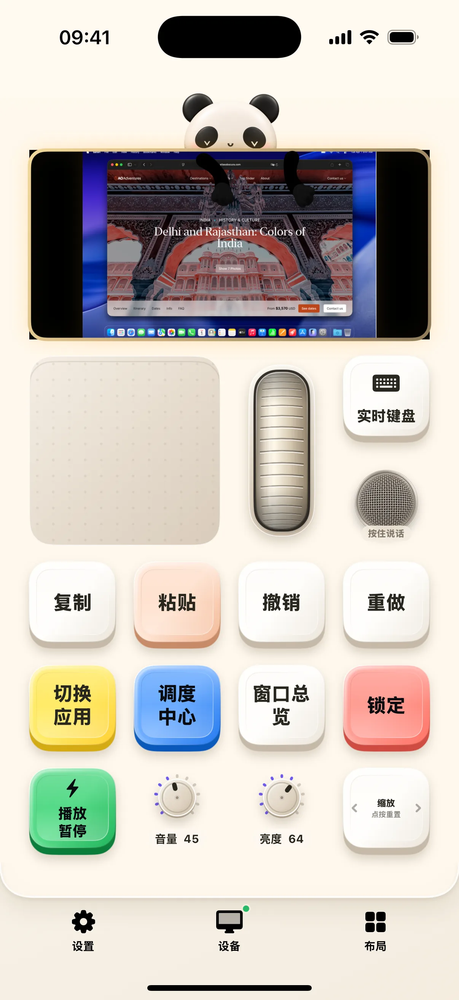
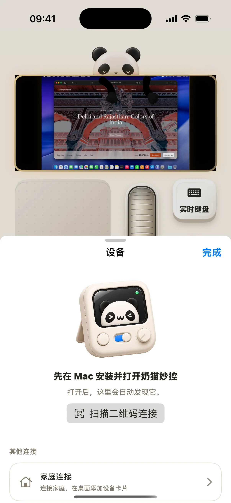
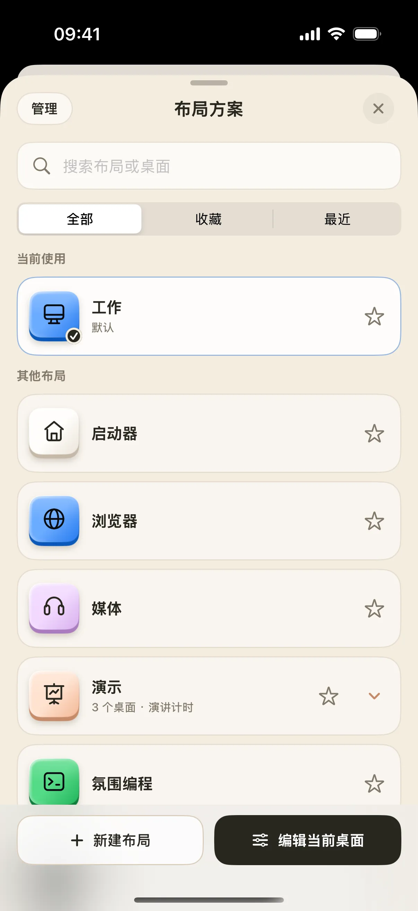
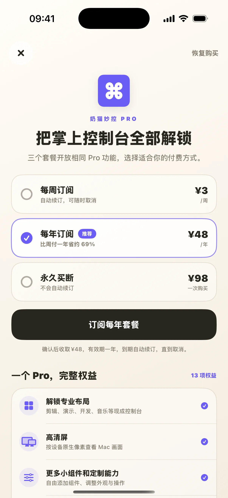

上
上


导演
剪辑时，时间线尽在掌心
无级旋钮与剪辑快捷键随时响应，快速穿梭时间线与标记打点
 DaVinci Resolve
DaVinci Resolve Final Cut Pro
Final Cut Pro 剪映专业版
剪映专业版

REMOTE SCREEN & CONTROL
低延迟桌面画面镜像、虚拟触控板、文本输入与无线麦克风，在手机上轻松操控 Mac。

将 Mac 实时画面、虚拟触控板与滚动条集成在同一界面，躺在沙发上也能轻松操控电脑。

CUSTOM CANVAS
像拼积木一样长按拖拽按键、旋钮与触控板，按你的使用习惯随心排布。
支持自由调整按键大小与位置，布局更符合你的手指操作习惯。
一键绑定组合快捷键、脚本与系统操作，日常流程一步直达。
为不同软件设置专属小键盘，切换当前窗口时自动跟随就绪。

FAST PAIRING
下载安装包，将“奶猫妙控”拖入“应用程序”文件夹
按系统引导开启辅助功能权限，以支持跨应用快捷控制
手机与 Mac 处于同一 Wi-Fi，打开手机扫码即可连接
长按桌面图标快速扫码，或从小组件随时查看连接状态与控制台


导演
无级旋钮与剪辑快捷键随时响应，快速穿梭时间线与标记打点
DaVinci ResolveFinal Cut Pro剪映专业版PRO EDITION
提供按周、按年订阅及终身买断方案 · 全平台统一解锁全部 Pro 功能
一次开通，同 Apple ID 下的 iPhone 与 iPad 均可使用

¥3/ 周约 ¥0.43 / 天
¥48/ 年折合仅 ¥4 / 月 · 每天 ¥0.13
¥98一次购买相当于仅 2 年年费
PRO EXCLUSIVE
开箱即用，让你的手机与平板变身功能丰富的掌上副控
深度适配剪映、DaVinci Resolve、Final Cut Pro、Keynote 等常用软件，开箱即用。
清晰呈现 Mac 桌面细节，文字与界面显示更细腻，低延迟顺畅响应。
单个方案支持添加更多按键分页，通过轻扫手势在不同用途间自由切换。
包含虚拟激光笔、局部放大镜、演讲提词器与提示音效。
支持连续平滑调节数值、穿梭视频时间线与滚动页面，操作更自然。
在手机上整理文字与临时便签，一键快捷同步至 Mac 当前光标处。
无论选择订阅或永久买断，均享有完全相同的 Pro 权益。查看完整购买与订阅条款

需要。iPhone/iPad 与 Mac 通过本地局域网高速直接通信，无需外网连接，延迟更低更安全。
常规按键与控制需在 Mac 的“系统设置 → 隐私与安全性 → 辅助功能”中允许奶猫妙控；若需屏幕实时画面镜像，则需单独开启“屏幕录制”权限。
核心基础小键盘与系统控制完全免费。Pro 会员可在 iPhone/iPad 端进入“设置 → 奶猫妙控 Pro”订阅或买断，所有交易由 Apple App Store 处理，支持一键恢复购买。
绝不上传。所有控制指令、文本与屏幕画面均在本地局域网内点对点直连传输，不经过任何云端服务器，充分保护您的隐私安全。
支持运行 macOS 13 (Ventura) 及更高版本的 Mac 设备，Universal 通用架构原生适配 Apple Silicon (M系列芯片) 与 Intel 处理器。

下载 DMG 安装包，将奶猫妙控拖入“应用程序”，一扫即连macOS 13+ · 原生支持 Apple 芯片与 Intel
下载